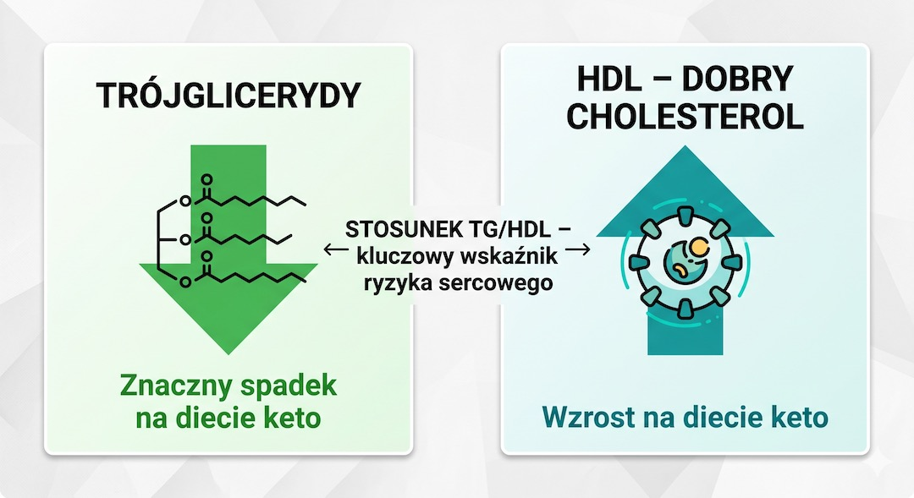

Dieta ketogeniczna jest dziś jedną z najpopularniejszych diet na świecie. Miliony ludzi chudną, lepiej śpią i twierdzą, że nigdy nie czuli się lepiej. Wyniki badań krwi często też wyglądają imponująco – trójglicerydy w dół, dobry cholesterol w górę, cukier wyrównany. Ale jest jeden parametr, który potrafi wystrzelić w górę w sposób, którego nikt się nie spodziewa: LDL – zły cholesterol.Nauka ostatnich dwóch lat przyniosła wyjątkowo dużo nowych danych na ten temat. Są metaanalizy, są badania obrazowe tętnic wieńcowych, jest nowo odkryty fenomen LMHR, który wywrócił do góry nogami część dotychczasowych założeń. Jest też sporo odpowiedzi na pytanie, dlaczego ludzie na keto tak świetnie wyglądają – i co się z nimi dzieje po roku, dwóch, trzech. Zebraliśmy to wszystko w jednym miejscu. Tylko sprawdzone fakty.
Szybka odpowiedź
Po 50-tce najlepsze efekty daje prosty plan jedzenia oparty na faktach, regularności i rozsądnych wyborach, a nie na modnych hasłach. W tym materiale znajdziesz najważniejsze mechanizmy, częste błędy i praktyczne wskazówki, które pomagają poprawić zdrowie, sytość i codzienne decyzje bez zbędnego zamieszania każdego dnia.
Kluczowe wnioski
Kluczowe wnioski po 50-tce warto rozłożyć na praktyczne kroki i odnieść do codziennych decyzji.
- Keto podnosi LDL średnio o 0,35 mmol/L, ale jednocześnie obniża trójglicerydy, podnosi HDL i poprawia glikemię.
- Fenomen LMHR: u szczupłych, zdrowych osób LDL może wzrosnąć dramatycznie – do 200–800 mg/dl – przy świetnym profilu pozostałych parametrów.
- Badanie KETO Trial 2024 nie wykazało wyższego obciążenia blaszkami wieńcowymi u LMHR, ale obserwacje prospektywne są niepewne.
- Zamiana tłuszczów nasyconych na nienasycone na keto może normalizować LDL bez rezygnacji z diety.
- Ciągłe długoterminowe keto może indukować senescencję komórkową – keto przerywane (z przerwami) jest bezpieczniejsze.
- Po 50-tce keto wymaga monitorowania lipidogramu, ApoB i konsultacji lekarskiej przy LDL powyżej 190 mg/dl.
Czym jest keto i dlaczego zmienia chemię twojej krwi?
Dieta ketogeniczna to model żywienia, w którym węglowodany są ograniczone do minimum – zazwyczaj poniżej 50 g dziennie, często do 20–30 g. Dla porównania: jedna bułka to około 30 g węglowodanów. Przy takim ograniczeniu organizm po 2–4 dniach wyczerpuje zapasy glikogenu (glukozy magazynowanej w wątrobie i mięśniach) i przestawia się
na inny silnik: zaczyna rozkładać tłuszcze do ciał ketonowych, które stają się głównym paliwem dla mózgu i mięśni. Ten stan nazywa się ketozą metaboliczną .
To przestawienie napędu ma bezpośrednie konsekwencje dla chemii krwi. Kiedy insulina jest niska (bo nie ma węglowodanów, które ją wywołują), wątroba zwiększa produkcję lipoprotein VLDL i transportuje więcej kwasów tłuszczowych do tkanek. Lipoprotein lipaza rozkłada VLDL, pozostawiając cząsteczki LDL i podnosząc przy tym poziom HDL. Jednocześnie trójglicerydy – które rosną właśnie po węglowodanach i cukrach prostych – drastycznie spadają. To wyjaśnia, dlaczego profil lipidowy na keto jest tak mieszany: jedne wskaźniki idą w dobrą stronę, inne budzą pytania.
Kluczowe jest to, że organizm każdego człowieka reaguje na to przestawienie inaczej. Zależy to od genetyki, masy ciała, wyjściowego profilu metabolicznego i tego, jakie tłuszcze dominują w diecie. I właśnie ta zmienność jest sercem całej naukowej debaty o keto i cholesterolu.

Najważniejsze z tej sekcji
Ketoza metaboliczna: przy spożyciu poniżej 50 g węglowodanów dziennie organizm przełącza się z glukozy na ciała ketonowe jako główne paliwo. Ten mechanizm zmienia produkcję i transport lipoprotein w wątrobie.
Źródło: NCBI StatPearls – The Ketogenic Diet: Clinical Applications, 2025
Co mówi największa metaanaliza 2024 – wyniki konkretne, bez owijania w bawełnę?
W lipcu 2024 roku w prestiżowym American Journal of Clinical Nutrition ukazała się metaanaliza 27 randomizowanych badań kontrolowanych z udziałem 1278 uczestników – największa dotychczas analiza wpływu diety ketogenicznej na czynniki ryzyka sercowo-naczyniowego. Wyniki są niejednoznaczne i właśnie dlatego warto je znać w całości, a nie w wersji skróconej przez media.
Co wzrosło na keto: cholesterol całkowity (+0,36 mmol/L), LDL-cholesterol (+0,35 mmol/L), HDL-cholesterol (+0,16 mmol/L). Co spadło: trójglicerydy (istotny spadek), masa ciała, ciśnienie krwi, poziom glukozy na czczo, HbA1c. Autorzy wprost piszą: chociaż keto wykazuje korzyści dla trójglicerydów, ciśnienia, wagi i glikemii, wzrost LDL i cholesterolu całkowitego wymaga ostrożności w ocenie ryzyka sercowo-naczyniowego.
Ważny kontekst: wzrost LDL o 0,35 mmol/L to wartość średnia. W praktyce część uczestników nie miała żadnego wzrostu LDL, a u innych wzrósł on dramatycznie. To nie jest dieta, która działa u wszystkich tak samo. Heterogeniczność wyników była w tej metaanalizie bardzo wysoka (I² = 73,9% dla LDL), co oznacza, że reakcja na keto jest mocno zindywidualizowana.

Najważniejsze z tej sekcji
Metaanaliza 2024 (27 RCT, 1278 osób): keto podnosi LDL średnio o 0,35 mmol/L i HDL o 0,16 mmol/L, jednocześnie obniżając trójglicerydy, wagę i ciśnienie. Ale zmienność wyników jest ogromna.
Źródło: American Journal of Clinical Nutrition, lipiec 2024, doi:10. 1016/j. ajcnut. 2024. 04. 021
Fenomen LMHR – kiedy zdrowy człowiek na keto dostaje LDL jak przy ciężkiej chorobie genetycznej?
To najbardziej zaskakujące odkrycie ostatnich lat w kardiologii żywieniowej. Wśród osób stosujących keto wyodrębniono grupę, która na diecie niskowęglowodanowej doświadcza dramatycznego wzrostu LDL – nie do 150 czy 160 mg/dl, ale do 200, 300, a nawet 500–800 mg/dl. Dla porównania: wartości powyżej 190 mg/dl lekarze zazwyczaj wiążą z genetyczną hipercholesterolemią rodzinną, chorobą dotykającą jedną osobę na 500.
Fenomen nazwano LMHR – Lean Mass Hyper-Responder (polska propozycja: nadreagujący z niską masą tłuszczu). Profil typowego LMHR: LDL ≥200 mg/dl, HDL ≥80 mg/dl, trójglicerydy ≤70 mg/dl. Co istotne – te osoby są zazwyczaj szczupłe, aktywne fizycznie i metabolicznie zdrowe. Badanie kohortowe wykazało, że przed przejściem na keto miały normalny LDL (~100 mg/dl), który eksplodował dopiero po ograniczeniu węglowodanów. Mechanizm: niska insulina + szczupłe ciało bez rezerw tłuszczu = wątroba musi wyprodukować dużo VLDL, żeby dostarczyć tłuszcz do tkanek, a końcowym produktem tej kaskady jest lawinowo rosnący LDL.
Przełomowe badanie KETO Trial opublikowane w JACC: Advances w sierpniu 2024 roku sprawdziło 80 takich osób (średni LDL 272 mg/dl, na keto średnio 4,7 roku) i porównało je z dopasowaną grupą kontrolną ze znacznie niższym LDL (123 mg/dl). Wynik przekroczył oczekiwania wielu naukowców: nie stwierdzono istotnej statystycznie różnicy w obciążeniu blaszkami miażdżycowymi w tętnicach wieńcowych między grupami. Ale – i to jest kluczowe – badanie KETO-CTA opublikowane rok później, śledzące postęp zmian przez rok, wykazało progresję blaszki nieuwapnionej. Debata trwa, a dane prospektywne długoterminowe wciąż nie istnieją.
Najważniejsze z tej sekcji
LMHR to nie teoria: u niektórych szczupłych osób na keto LDL rośnie do 300–800 mg/dl. Badanie KETO Trial (JACC:Adv, 2024) nie wykazało różnicy w blaszkach wieńcowych w obserwacji przekrojowej – ale 1-roczna obserwacja prospektywna pokazuje progresję. Sprawa nie jest zamknięta.
Źródło: JACC: Advances, sierpień 2024; Journal of Clinical Lipidology, 2022
Trójglicerydy, HDL i cała reszta – gdzie keto naprawdę błyszczy?
Zanim skupimy się tylko na LDL, warto zobaczyć pełny obraz. Trójglicerydy to jeden z najlepiej udokumentowanych sukcesów diety ketogenicznej. Są bezpośrednio napędzane przez spożycie cukrów prostych i węglowodanów – im mniej węglowodanów, tym niższe trójglicerydy. Metaanaliza z 2024 roku w Nutrition & Metabolism (29 badań, pacjenci z cukrzycą typu 2) wykazała istotny statystycznie spadek trójglicerydów przy stosowaniu bardzo niskowęglowodanowej diety ketogenicznej.
Dla osoby po 50-tce, która często zmaga się z podwyższonymi trójglicerydami przy normalnym LDL, to ważna informacja.
HDL – dobry cholesterol – konsekwentnie rośnie na keto. Wynika to z tego samego mechanizmu co wzrost LDL: aktywna lipoprotein lipaza przenosi składniki powierzchniowe z rozkładanych cząsteczek VLDL do cząsteczek HDL, zwiększając ich stężenie. W metaanalizie z 2024 roku wzrost HDL wynosił średnio +0,16 mmol/L. Wyższy HDL i niższe trójglicerydy to profil, który kardiolodzy prewencyjni cenią – stosunek TG/HDL jest jednym z najlepszych wskaźników insulinooporności i ryzyka sercowego.
Insulinooporność i glikemia – tu keto ma jedne z najsilniejszych dowodów. Wspomniana metaanaliza 29 badań wykazała istotny spadek glukozy na czczo (o 11,68 mg/dl) i HbA1c (o 0,29 punktu procentowego). U osób z cukrzycą i stanem przedcukrzycowym może to oznaczać zmniejszenie liczby przyjmowanych leków. To realny, klinicznie istotny efekt.

Najważniejsze z tej sekcji
Stosunek TG/HDL jest czulszym markerem ryzyka sercowo-naczyniowego niż samo LDL. Keto poprawia ten stosunek wyraźnie: trójglicerydy spadają, HDL rośnie. To prawdziwy pozytyw diety niskowęglowodanowej.
Źródło: Nutrition & Metabolism, 2024; MDPI Nutrients meta-analysis, 2022
Dlaczego na keto tak świetnie wyglądasz – nauka o skórze, wadze i energii?
To nie jest placebo ani efekt dobrego samopoczucia. Badania opublikowane w 2025 roku w Frontiers in Nutrition szczegółowo opisują mechanizmy, przez które keto pozytywnie wpływa na wygląd i samopoczucie. Po pierwsze: redukcja insuliny . Insulina to hormon, który między innymi stymuluje wydzielanie sebum przez skórę i nasila androgenną aktywność, co wiąże się z trądzikiem i przetłuszczaniem.
Na keto poziom insuliny jest bardzo niski, co obniża IGF-1, zwiększa SHBG i zmniejsza aktywność androgenów. Efekt: wyraźna poprawa skóry trądzikowej, mniej łojotoku.
Utrata masy ciała na keto w pierwszych 3–6 miesiącach jest szybsza niż na większości innych diet – meta-analizy kliniczne to potwierdzają. Część tej utraty to woda (glikogen wiąże wodę), ale po 6 tygodniach dominuje już redukcja tłuszczu, w tym tłuszczu trzewnego. Ciała ketonowe – w szczególności beta-hydroksymaślan (BHB) – mają udokumentowane działanie przeciwzapalne i wpływają na szlaki sygnalizacyjne NLRP3, co oznacza niższy poziom przewlekłego stanu zapalnego w całym organizmie. Ludzie opisują to jako „czystszy umysł”, lepszą koncentrację i stabilny poziom energii bez popołudniowych spadków – i jest na to biologiczne wytłumaczenie.
Uczucie sytości to kolejna udokumentowana zaleta: białko i tłuszcze sygnalizują sytość mocniej niż węglowodany. Wiele osób na keto spontanicznie je mniej kalorii bez liczenia – i to bez głodowania. Dla osób po 50-tce, które walczą z kontrolą apetytu po obniżeniu podstawowej przemiany materii, to może być prawdziwy przełom.
Najważniejsze z tej sekcji
Mechanizm poprawy skóry na keto: niska insulina → obniżony IGF-1 → wzrost SHBG → mniej aktywnych androgenów → mniejsza produkcja sebum i mniejszy stan zapalny w skórze.
Źródło: Frontiers in Nutrition, 2025 – Effects of ketogenic diet on skin
Węglowodany a cholesterol – ta zależność jest pomijana w rozmowach o keto?
Zaskakująca prawda jest taka, że wzrost trójglicerydów i obniżenie HDL – klasyczny „zły” profil lipidowy kojarzony ze zwiększonym ryzykiem sercowym – jest w dużej mierze napędzany przez nadmiar węglowodanów i cukrów prostych , a nie przez tłuszcze nasycone. Duże prospektywne badanie EPIC (520 tysięcy uczestników, 35–70 lat, 8 lat obserwacji) wykazało, że diety o wysokim ładunku glikemicznym wiążą się z wyższym ryzykiem choroby wieńcowej.
Kiedy jesz dużo cukrów prostych i produktów o wysokim indeksie glikemicznym, wątroba przetwarza nadmiar glukozy w trójglicerydy (lipogeneza de novo). Trójglicerydy rosną, HDL spada, a cząsteczki LDL stają się mniejsze i gęstsze – i właśnie te małe gęste LDL (sdLDL) są najbardziej aterogenne, bo łatwiej przenikają do ściany tętnicy. Keto odwraca ten mechanizm: trójglicerydy spadają, HDL rośnie, a cząsteczki LDL stają się większe – co jest korzystniejszym profilem. Kłopot polega na tym, że liczba cząsteczek LDL (ApoB) może mimo wszystko wzrosnąć, i to ona ma większe znaczenie dla ryzyka niż sama wartość LDL-C.
Dlatego w dyskusji o keto i cholesterolu nie wystarczy patrzeć na jedno pole w lipidogramie. Potrzebny jest pełny obraz: LDL, HDL, trójglicerydy, stosunek TG/HDL, a jeśli LDL jest podwyższone – koniecznie ApoB, który pokazuje, ile aterogennych cząsteczek faktycznie krąży w twoich tętnicach.

Najważniejsze z tej sekcji
Małe gęste LDL (sdLDL) są bardziej niebezpieczne niż duże LDL. Na keto LDL rośnie – ale wielkość cząsteczek zwykle się poprawia. Na diecie bogatej w cukry proste – cząsteczki LDL maleją i stają się groźniejsze.
Źródło: PMC – Potential Health Benefits of KD; EPIC Study
Zagrożenia, przeciwwskazania i co mówi nauka o keto po 50-tce?
Keto nie jest dietą dla każdego – i nauka jest tu coraz bardziej konkretna. Keto flu (grypopodobne objawy w pierwszym tygodniu: bóle głowy, zmęczenie, dezorientacja, skurcze mięśni) dotyka większość osób, które zaczynają keto bez właściwego nawodnienia i suplementacji elektrolitów. To przemija, ale jest sygnałem, że tranzycja metaboliczna obciąża organizm.
Badanie z UT Health San Antonio opublikowane w maju 2024 roku wykazało, że ciągła, długoterminowa dieta keto może indukować senescencję komórkową (starzenie komórek) w normalnych tkankach – szczególnie w sercu i nerkach. Co istotne: keto przerywane (z planowanymi przerwami) nie wykazywało tych efektów prozapalnych. To ważny sygnał dla osób po 50-tce, które traktują keto jako stały, dożywotni model żywienia. Długoterminowe ryzyko przy ciągłym keto obejmuje też: dyslipidemia, stłuszczenie wątroby (paradoksalnie! ), kamienie nerkowe, obniżona gęstość kości, niedobory witamin z grupy B, magnezu, potasu, witaminy C i błonnika.
Bezwzględne przeciwwskazania do keto (wg aktualnego piśmiennictwa): niedobór enzymu dehydrogenazy pirogronianowej, niedobory oksydacji kwasów tłuszczowych, ciężka choroba wątroby, ciężka przewlekła choroba nerek (CKD stadium 4–5), ciąża. Względne przeciwwskazania wymagające nadzoru lekarza: cukrzyca typu 1 (ryzyko kwasicy ketonowej), przyjmowanie leków przeciwcukrzycowych lub insuliny, choroba niedokrwienna serca, aktywne zaburzenia odżywiania. Dla osób po 50-tce z podwyższonym wyjściowym LDL lub obciążeniem rodzinnym chorobami serca: keto można rozważyć tylko z regularnym monitoringiem lipidogramu co 3 miesiące, ApoB i – jeśli LDL znacznie wzrośnie – rozważyć konsultację kardiologiczną.

Najważniejsze z tej sekcji
Badanie UT Health San Antonio (2024): ciągłe długoterminowe keto może powodować senescencję komórkową w sercu i nerkach. Keto przerywane (z planowanymi przerwami od diety) nie wykazywało tych efektów.
Źródło: UT Health San Antonio, maj 2024; NCBI StatPearls – Ketogenic Diet Contraindications
Najczęstsze pytania?
Najczęstsze pytania po 50-tce warto rozłożyć na praktyczne kroki i odnieść do codziennych decyzji. Po 50-tce najwięcej daje spokojne tempo, zrozumienie mechanizmu i regularne obserwowanie reakcji organizmu. Dzięki temu łatwiej przełożyć teorię na praktykę i uniknąć chaosu już na starcie.
Czy keto zawsze podnosi LDL?
Nie zawsze. Reakcja jest silnie zindywidualizowana. Osoby z nadwagą, insulinoopornością lub cukrzycą typu 2 często nie obserwują znaczącego wzrostu LDL – a niekiedy LDL nawet spada. Dramatyczny wzrost LDL dotyczy przede wszystkim osób szczupłych, metabolicznie zdrowych, z wysokim HDL i niskimi trójglicerydami – tak zwanych LMHR (Lean Mass Hyper-Responders). Metaanaliza 2024 wskazuje na średni wzrost o 0,35 mmol/L, ale rozpiętość wyników jest ogromna.
Warto przeczytać też: trening siłowy.
Powiązane tematy: trening siłowy.
Wysoki LDL na keto to zawsze powód do paniki?
Nie – ale to powód do monitorowania. Badanie KETO Trial z 2024 roku (JACC: Advances) wykazało, że u osób LMHR z bardzo wysokim LDL (średnio 272 mg/dl przez 4,7 roku) nie było więcej blaszek wieńcowych niż u dopasowanej grupy z niskim LDL. Jednocześnie 1-roczna obserwacja prospektywna wykazała progresję blaszki nieuwapnionej. Nauka nie zamknęła jeszcze tej sprawy. Jeśli LDL wzrośnie powyżej 190 mg/dl na keto – bezwzględnie porozmawiaj z kardiologiem i zbadaj ApoB.
Czy warto robić keto po 50-tce?
Może być bardzo wartościowe – szczególnie przy podwyższonych trójglicerydach, insulinooporności, nadwadze lub cukrzycy typu 2. Ale wymaga monitorowania. Przed wdrożeniem keto po 50-tce zrób pełny lipidogram (LDL, HDL, TG, cholesterol całkowity) + ApoB + glukoza na czczo. Powtórz badania po 3 miesiącach. Jeśli LDL wzrośnie powyżej 190 mg/dl lub ApoB znacznie wzrośnie – konsultacja kardiologiczna jest obowiązkowa, a nie opcjonalna.
Czy dieta keto niszczy wątrobę?
W warunkach krótkoterminowych – u zdrowych osób bez istniejącej choroby wątroby – ryzyko jest niskie. Paradoksalnie keto bywa stosowane terapeutycznie przy NAFLD (niealkoholowym stłuszczeniu wątroby). Jednak badanie na myszach z Uniwersytetu Utah (2025) wykazało, że bardzo długotrwałe keto może powodować akumulację tłuszczu w wątrobie i zaburzenia tolerancji glukozy. Przy istniejącej chorobie wątroby keto jest bezwzględnie zakazane bez nadzoru specjalisty.
Co zjeść, żeby obniżyć LDL na keto, jeśli za bardzo wzrósł?
Nauka wskazuje kilka skutecznych strategii: zamień tłuszcze nasycone (masło, tłuste mięso, smalec) na nienasycone (oliwa z oliwek, awokado, orzechy, tłuste ryby) – to tzw. Healthy Ketogenic Diet. Jedno badanie z 2024 roku wykazało normalizację LDL z 320 mg/dl do 111 mg/dl w ciągu 2 miesięcy po tej zmianie, bez leków. Dodaj błonnik (len, psyllium, warzywa zielone). Ewentualnie reintrodukuj umiarkowane ilości węglowodanów – u LMHR samo to szybko normalizuje LDL.
Keto nie jest złe. Keto nie jest dobre. Keto to narzędzie – i jak każde narzędzie, źle dobrane lub używane bez nadzoru może zrobić krzywdę.
Źródła
Źródła po 50-tce warto wdrażać krok po kroku i od razu łączyć teorię z praktyką. Dzięki temu łatwiej utrzymać regularność, poprawić bezpieczeństwo działań i szybciej zauważyć trwałe efekty zdrowotne w codziennym życiu.
- https://www.sciencedirect.com/science/article/pii/S0002916524004453
- https://pmc.ncbi.nlm.nih.gov/articles/PMC8796252/
- https://pmc.ncbi.nlm.nih.gov/articles/PMC11450898/
- https://www.jacc.org/doi/10.1016/j.jacadv.2024.101109
- https://www.lipidjournal.com/article/S1933-2874(22)00295-1/fulltext
- https://www.frontiersin.org/journals/nutrition/articles/10.3389/fnut.2025.1686056/full
- https://link.springer.com/article/10.1186/s12986-024-00824-w
- https://news.uthscsa.edu/a-long-term-ketogenic-diet-accumulates-aged-cells-in-normal-tissues-a-ut-health-san-antonio-led-study-shows/
- https://www.ncbi.nlm.nih.gov/books/NBK499830/
- https://pmc.ncbi.nlm.nih.gov/articles/PMC7539910/
Uwaga: Artykuł ma charakter wyłącznie informacyjny i edukacyjny. Nie zastępuje konsultacji lekarskiej, diagnozy ani leczenia. Każda zmiana diety, szczególnie tak radykalna jak keto, powinna być poprzedzona badaniami krwi i konsultacją z lekarzem. Dotyczy to szczególnie osób z chorobami serca, wątroby, nerek, cukrzycą lub przyjmujących leki. Autorzy FitPo50 nie ponoszą odpowiedzialności za działania podjęte na podstawie informacji w artykule.